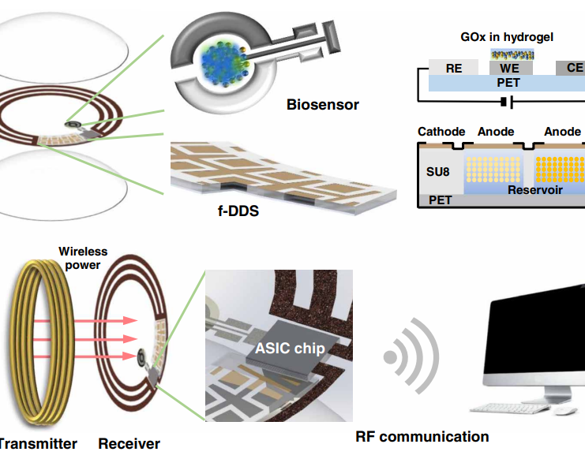
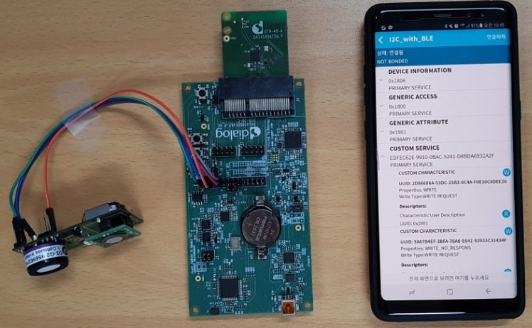
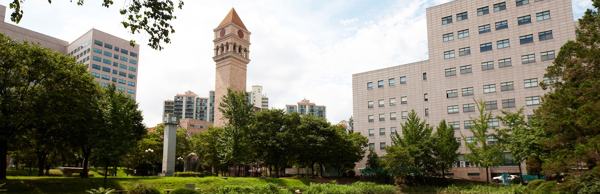

Analog & Mixed-Signal IC Design
아날로그 · 디지털 혼성 집적회로 연구실
센서 인터페이스, 데이터 변환기, 클럭, 전원 회로를 설계하고, 칩으로 제작해 직접 측정합니다.
우리가 설계하는 회로

1.5 mm × 1.5 mm
연구 분야 → 자세히 : Research · Publication


발진기 · 타이머
크리스털 없이 칩 안의 R · C 로 클럭을 만듭니다.
ISSCC · TCAS-I · TCAS-II · TVLSI


센서 인터페이스
센서의 작은 전류를 읽는 칩. 스타트업 제품에 쓰였습니다.
VLSI · JSSC · Science Advances · TVLSI

진행 중 아날로그 CIM · RISC-V · AI 가속기 · 전원 회로 · NV 양자 센싱 (준비 중)
RC 발진기 · 타이머 Oscillator & Timer
크리스털 없이 칩 안의 저항과 커패시터만으로 클럭을 만듭니다.
- 주파수 오차 보상 루프를 쓴 RC 발진기
- RC 발진기의 잡음 해석
- 온도에 따른 주파수 변화 보상
- 9.6 nW 웨이크업 타이머


PLL · CDR Clock Generation
필요한 주파수의 클럭을 만드는 회로입니다.
- PLL 10 MHz ~ 3.2 GHz 동작
- CDR 디지털 합성으로 만든 quarter-rate CDR
SAR ADC Data Converter
아날로그 전압을 숫자로 바꾸는 회로입니다.
- 커패시터 DAC 배열을 바꿔 기생 · 부정합 영향을 줄임
- 2025 학부생 칩 설계 교육에서 ADC 제작

센서 인터페이스 Sensor Interface System
센서의 작은 전류를 읽어 디지털 값으로 내보내는 칩입니다. 전원 · 발진기 · ADC · 통신 회로가 한 칩에 들어갑니다.
- 스마트 콘택트렌즈 IC 포도당 측정용. 무선 전력 전송, 433 MHz 무선 통신
- 가스 센서 인터페이스 IC BLE 칩과 묶어 무선 가스 측정 시스템 구현. 스타트업 노드톡스의 제품에 적용



전원 회로 Power Management
LDO 와 DC-DC 컨버터를 연구하고 있습니다.
- 진행 중 LDO · DC-DC 컨버터
- 2026 학부생 승압 DC-DC 컨버터. 4학년 3명이 설계 · 측정 (1 V 입력 → 약 4 V 출력), 제2회 내 칩 경진대회 본선


Notice 학부 인턴 · 대학원생 모집
학부 인턴학생을 모집하고 있습니다.
대학원 진학에 관심 있는 3학년 2학기 · 4학년 1학기 학생(전자회로 수강)은 상담을 요청 바랍니다.
문의 : jahyun@sejong.ac.kr 또는 충무관 928호
We are looking for graduate students and undergraduate interns interested in analog mixed-signal IC design.
Contact
구자현 교수 (Prof. Jahyun Koo)
세종대학교 충무관 928호 (서울 광진구 능동로 209)
02-3408-3507 · jahyun@sejong.ac.kr
